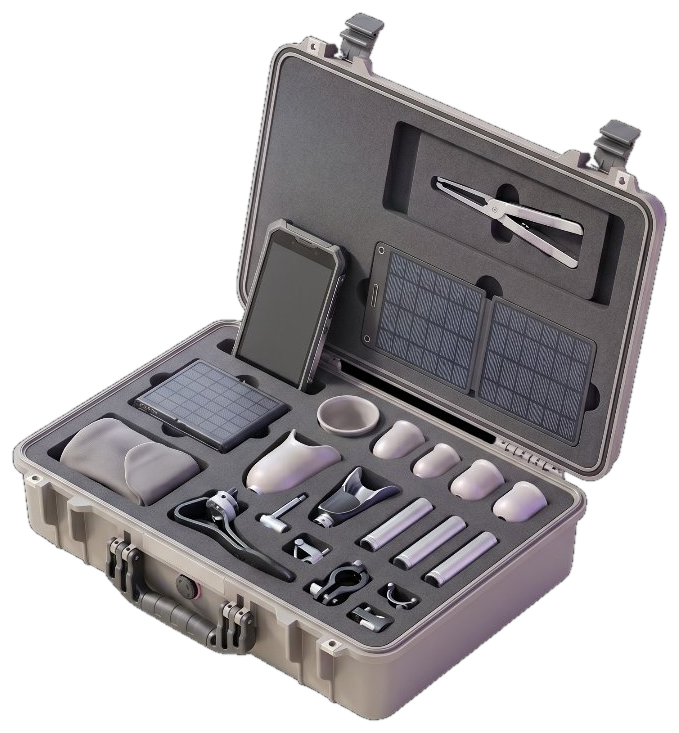
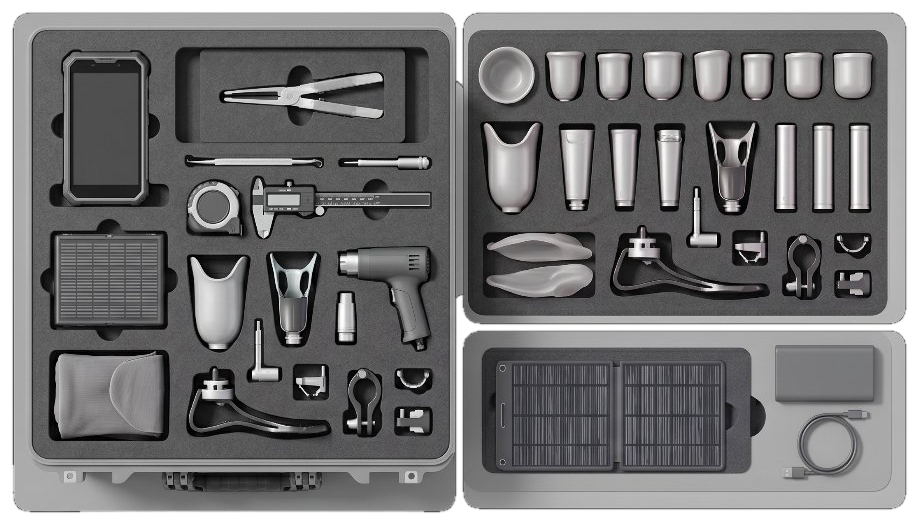
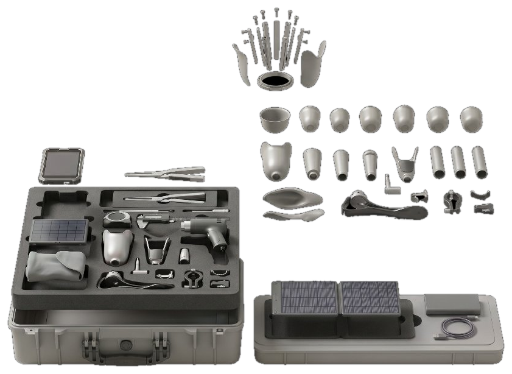
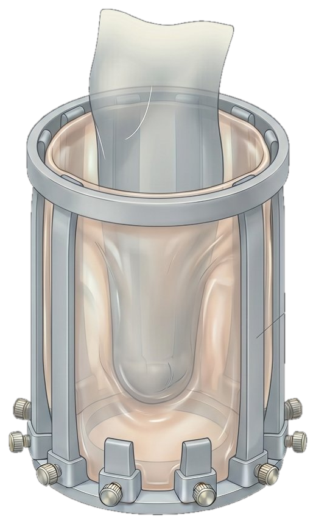
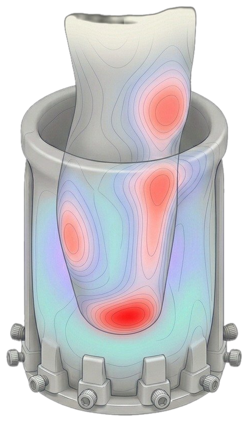
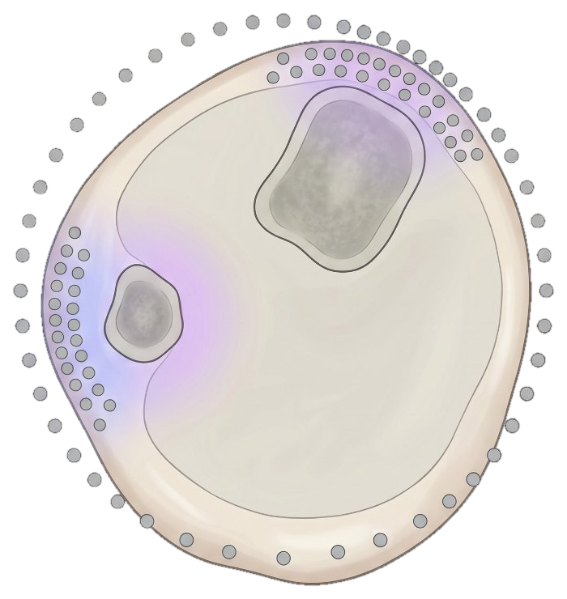
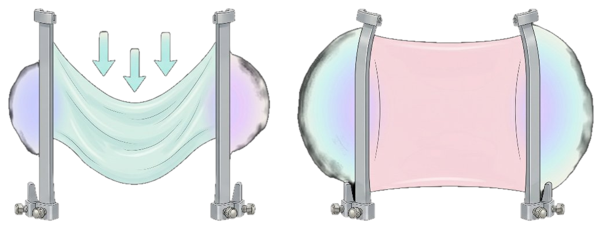
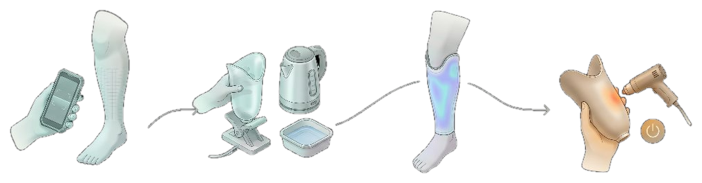

Mohammad Zoraiz
ECE, Physics, CS
Qadam packs an entire fitting clinic into one portable, solar-powered case — a phone, the tools, and the standardized parts to custom-fit 15–20 prosthetic limbs anywhere, plus the open IP to make more. The intelligence lives in the fitting; the limb the patient keeps is robust, low-cost, and purely mechanical.
The reason high-tech prosthetics don't reach a refugee camp isn't the limb — it's everything around it: the clinician, the lab, the power, the supply chain. Qadam's architecture attacks that. Every smart, fragile, expensive component lives in the fitting tech inside the case — never in the limb itself. What the patient walks away with is robust, low-cost, and purely mechanical: nothing to charge, brick, or break.
The app computes the target shape and prints the settings; a technician dials them in by hand. No motors, no actuators, no power needed to shape a limb.
A low-temp plastic check socket forms in boiling water in minutes — letting a non-expert verify fit and iterate before committing the definitive socket.
A certified prosthetist sets the accuracy targets and red-flag criteria the software enforces — so expertise scales without a specialist in every tent.
Qadam isn't a single limb — it's a deployable system. One ruggedized, solar-powered case carries everything to turn any room into a fitting clinic and produce 15–20 complete below-knee fittings before it needs a resupply of standardized parts. It splits into three layers: the reusable fitting tech that lives in the case forever, the per-patient parts that get built into each limb, and the power to run it all off-grid.



Runs the offline fitting app — scan, settings, check-socket read. No cloud, no signal needed.
Low-power forming of the check-socket sheet. The one step that draws on the battery.
Reconfigurable formers in standard sizes — the permanent fitting tech that serves patient after patient.
Foldable panel plus a bank — enough to run an entire fitting clinic fully off-grid.
The credibility of the whole system rests on one honest distinction: what's reusable versus what's consumed. The fitting technology is permanent — it fits patient after patient. Only the standardized building blocks deplete. So the real claim isn't "15–20 limbs in a box," it's "the reusable fitting tech plus consumables for 15–20 custom fittings" — and resupply is just a refill.
Lives in the case forever. Sanitized between patients.
What actually gets built into each person's limb. This is what depletes — sized for 15–20 builds.
Everything needed to run, pack, and resupply in the field.
The socket — the cup that joins limb to prosthetic — is the make-or-break interface. Get it wrong and the patient gets skin breakdown and abandons the device. Our former is a single reusable tool that takes a digital limb model and physically reshapes itself into the mold for a perfectly rectified socket.

A handful of flexible longitudinal staves with a membrane stretched over them — clustered where rectification gradients are steepest. Limbs are smooth, so ~30–50 hand-set controls capture the geometry that hundreds of actuated pins would, at a fraction of the cost and failure surface.
Modest external compression over a heated sheet, instead of full vacuum. It sidesteps membrane sag, the sealing problem, and venting through the skin — the topology's real engineering trap.
A documented re-zero procedure and a physical reference master the technician periodically forms against. Backlash and zero-drift are treated as a maintenance reality, not an afterthought.
No electronics in the tool itself. Nothing to brick, no battery, no firmware. Field-serviceable with basic parts and built to outlast the conditions.
A thermal render of the socket-former mid-fitting: the staves flex to the rectified target shape while the pressure-mapping skin surfaces where load concentrates. Hover any marker to see what it is; the lenses on the right zoom into each feature.

The scanned, rectified limb model the former shapes itself around — never the limb itself under load.
The make-or-break cup geometry. Get the rim and relief zones right and the limb stays comfortable for hours.
~30–50 longitudinal staves carry the membrane and capture the rectified surface — clustered where gradients are steepest.
The pressure-sensing skin flags concentrated load against clinical thresholds, so a non-expert can iterate before committing a socket.
The app prints exact settings; a technician dials them in by hand. No motors, no power needed to shape a limb.
A transtibial cross-section. The control points ring the limb but cluster where the surface bends hardest — over the tibial crest and around the fibula head — and thin out across the broad, forgiving posterior. A handful of well-placed staves capture the geometry hundreds of uniform pins would, for a fraction of the cost.
The large weight path. Mapped for relief, not pressure — load it wrong and the crest is the first place the skin breaks down.
A sharp, pressure-sensitive prominence. Needs dense control nearby to carve precise relief around it.
Staves bunch where curvature gradients are steepest — that's where a millimeter of error actually matters.
The iridescent zones are where the model offloads pressure into tolerant tissue instead of bone.

Stretch a heated sheet over the staves and pull a vacuum and it sags between supports, smearing the geometry you worked to capture (left). Our route is drape-and-wrap: modest external compression that pulls the membrane taut and even across the staves, without the sealing and venting problems of full vacuum (right).

Between supports the sheet droops under its own pull — exactly where a millimeter of error costs comfort. Sealing and venting through the skin make it worse.
Light external compression keeps the membrane taut and faithful to the staves — no full vacuum, no sealing problem, no venting trap.
The check-socket loop is the cleverest part of the system: a fast, transparent, off-grid trial that lets the rectification be iterated before any definitive socket is committed.

Phone camera captures the residual limb. The app builds a 3D model and computes the rectified target shape.
phone only →Set the former to target. Drape low-temp PCL plastic (forms in boiling water) for a clear trial socket in minutes.
off-grid →Pressure-sensing sleeve checks the fit against clinical thresholds. Adjust rectification, re-form, repeat — until it's right.
off-grid →With the fit confirmed, form the load-bearing polypropylene socket. This step needs heat (150–180 °C) — a heat gun or oven, i.e. power.
needs powerWe're a venture, not a lab — but building something this load-bearing means being honest about what's unproven. These are the assumptions — ranked by how likely they are to kill the concept — that our research settles before any hardware is cut or any human is fitted. Every fitting we do feeds the data that answers the next one.
Before any metal: sample real rectified transtibial scans as N stave curves, loft a surface, smooth between staves to model the membrane, and compute a surface-error heat-map. Answers — for free, on a laptop — whether the topology can even hit a millimeter-class target, how many staves it takes, and where they go.
geometry · pre-hardwareA tensioned skin must be taut enough not to sag under forming pressure, yet slack enough not to pull the stave tips inward. It can't be both at once. We coupon-test a flexible bending-skin (spring shim / PETG) against a stretch elastomer to find the regime that wins for smooth limbs.
mechanicsUniform spacing is probably wrong. The features that prevent skin breakdown — fibular head, tibial crest, tibial tubercle — cluster anterolaterally. We're deriving non-uniform stave layouts from where real rectifications put their sharpest gradients.
geometry · clinicalLead screws develop backlash; a non-expert won't notice slow zero-drift and will quietly produce wrong sockets. We design the re-zero procedure and reference master as first-class deliverables, not footnotes.
reliability24–48 settings in 10–15 minutes is ~30s each for a non-expert — optimistic, and worse if staves couple. We mechanically decouple staves or enforce a strict setting order, then validate realistic timing on non-experts, not on our own team.
human factorsA non-expert producing a load-bearing socket is a serious safety claim, and the check-socket + pressure-sensing loop meant to make it safe is itself unproven. A certified prosthetist defines the accuracy target and red-flag criteria early. No human is fitted until this loop is validated.
clinical · regulatoryDe-risked in the right order: the lowest-cost, most decision-relevant tests come first. A bad result on V1's fidelity study kills the concept before a dollar of hardware time is spent.
Error heat-maps over real rectified scans. Sweep stave count, placement, control points. Go/no-go gate for the whole concept.
A CPO advisor translates the residual-error maps into an acceptable tolerance and red-flag criteria.
Bending-skin vs. elastomer under forming pressure and heat. Decide the skin before the frame.
Bench prototype: dial settings by hand, form a check socket, measure surface error against the digital target.
Instrument the check-socket loop so fit quality is measured, not judged by eye — the core of the safety claim.
Hardware reflects the placement study — denser anterolaterally over the bony prominences.
Re-zero procedure, reference master, and a non-expert-tested setting workflow with validated timing.
First human sockets, every one signed off by a certified prosthetist against the V1 red-flag criteria.
CAD, firmware-free build files, BOMs, and the fitting software published under open licenses — manufacturable locally.
A curriculum and certification so partner organizations can run fittings independently and safely.
Documentation and evidence package for approval in target deployment regions.
Apply the durables/consumables + phone-as-brain pattern to orthotics and other accessible medical devices.
A device that can't be repaired or reproduced locally fails the people it's meant to serve. Everything — hardware, software, methods, and the honest negative results — is published openly so anyone, anywhere can build, fix, audit, and improve it.
Parametric, electronics-free designs. Fork it, fab it on a local CNC, adapt it to what your supply chain can source.
The scan-to-settings pipeline that turns any phone into the system's brain — auditable and free.
Fidelity sims, coupon-test results, and the clinical accuracy criteria — including what didn't work.
No proprietary cartridges, no cloud dependency, no per-fitting fee. The consumable is a sheet of plastic you can buy anywhere.
The mechatronics are tractable. The real gating risk is clinical: a non-expert producing a load-bearing socket without a prosthetist present is a significant safety claim, and the safety loop that's meant to justify it is unproven. We won't let the engineering elegance of the former pull focus from validating that loop — because that's what a pilot, a funder, and a regulator will rightly interrogate. A certified prosthetist is involved before any human is fitted. We publish our negative results too.
The mechatronics are the easy part. What makes Qadam a real research problem — not just an engineering build — is a cluster of coupled questions in geometry, mechanics, and human factors that decide whether a non-expert can produce a clinically sound socket at all. These are the ones we're working through first.
Sample real rectified transtibial scans as N stave curves, loft a surface, relax it between staves to model the skin, and compute a residual-error heat-map. A pure-software study that answers — for free, on a laptop — whether the concept can even represent a clinically acceptable surface before a dollar of hardware is spent.
surface error · DOF sweepSag scales as (span² × pressure) / (tension × thickness). Tension high enough to kill sag across a 3–4 cm circumferential gap is also high enough to pull the stave tips inward — so the membrane can't be both taut and non-distorting at once. We're characterizing where that trade-off actually lands.
membrane mechanicsA thin constant-thickness sheet (spring shim, PETG, Delrin) resists local sag by bending stiffness rather than tension — and limbs are smooth, the regime where a bending skin wins. We coupon-test both against forming pressure and heat instead of defaulting to elastomer.
coupon testThe features that prevent skin breakdown are localized — fibular head, tibial crest, tibial tubercle, distal bone ends. We're deriving non-uniform stave layouts (dense anterolaterally, sparse posteriorly) from where real rectifications put their sharpest gradients.
clinical · placementVacuum through a sealed skin needs vents that fight the smooth-surface goal, and full vacuum loads the membrane hardest. Modest external compression over a heated sheet sidesteps sealing, venting, and sag at once. For this topology we treat it as nearly decided — and we're proving it.
processLead screws develop backlash; a technician won't notice slow zero-drift, and setting one stave can nudge its neighbor. We're designing a re-zero procedure, a physical reference master, and a decoupled setting order — then validating realistic timing on non-experts, not on our own team.
reliability · human factorsQadam grew from a belief that practical healthcare innovation should benefit humanity, especially people whose circumstances make specialist care hard to reach. We see a real need for more accessible prosthetic care in refugee communities, and an opportunity to work on it with care and openness.
We want to explore whether a portable, reusable fitting system can bring more of that care closer to the people who need it. The concept still needs engineering tests and clinical validation. We want clinicians, engineers, and communities to help shape the work and challenge our assumptions.
Qadam is early, open, and looking for the people who can move it from a thesis to a fitted limb. There's a role here whoever you are.
Mechanical, geometry-processing, and mobile devs to build the former and the scan-to-settings pipeline.
Prosthetists & O&P researchers to set the accuracy targets, red-flag criteria, and validate fit.
Grant-givers and partners backing high-leverage, open, deeply practical accessible-biotech work.
NGOs and clinics in deployment regions to co-design and host supervised pilots.